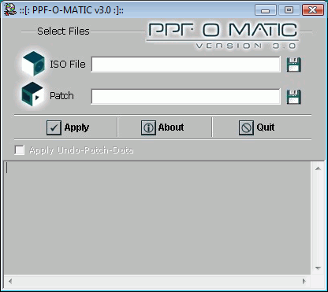

Debug Mode
📎 Recovered from the ShaolinAssassin wiki · snapshot 20170810221908
Debug mode
______________________________________________________________________________________________________________
POPStarter has an embedded debug mode. It’s ON by default in SMB mode (and it can’t be turn OFF in this mode) and it can be turn ON in HDD and USB modes. Use debug mode when something is wrong in your setup.
How to enable POPStarter debug mode :
- Easy method : apply the DEBUG_AND_HALT.PPF over POPSTARTER.ELF (or POPSTARTER.KELF) using a PPF patcher (such as PPF-O-matic).
-
Launch PPF-O-Matic ;
-
Click on “Load CD Image file” (first floppy icon) ;
-
Change file type from “CD Image file” to “All files” ;
-
Browse to POPSTARTER.ELF location and select it ;
-
Click on “Load PPF file” (second floppy icon) ;
-
Browse to DEBUG_AND_HALT.PPF location and select it ;
-
Click “Apply” and you’re done. Do not forget to rename POPSTARTER.ELF before using it.
- Advanced method : hexedit manually POPSTARTER.ELF. See POPStarter Configuration Table here.
Take note of the debug message and ask/report it @ASSEMblergames if you need more help.
______________________________________________________________________________________________________________
Index
Images & screenshots
